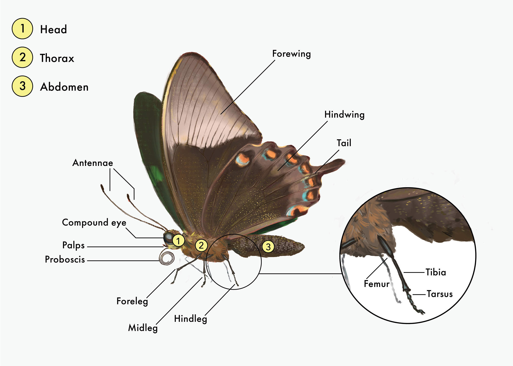

Parts of a Butterfly

Butterfly world

All insects, including butterflies, share a common overall body design. A butterfly’s body is divided into three main sections, the head, the thorax, and the abdomen. Each body section has very different functions, and all are needed for the butterfly to live.
A butterfly’s head is full of extremely important organs that allow the butterfly to sense what is around it and to feed.
On the head, you will find:
Antennae (singular: Antenna) -
Attached at the top of the head. Antennae are sensory organs used to pick up chemicals in the air, which may be anything from the smell of flowers to the scent of a potential mate. They also help with balance and in detecting motion. Think of them as the butterfly’s version of a nose.
Compound Eyes -
Unlike human eyes, which each have one lens, each of a butterfly’s compound eyes is made up of many smaller “eyes” called ommatidia, which each have their own lens. The butterfly’s brain stitches the information from all of these tiny eyes into a picture of the world around it. Butterflies likely don’t see the crisp, clear images that we see as humans, but they make up for it in other ways! Since the ommatidia in their compound eyes are all pointed in slightly different directions, butterflies can see forwards, backwards, above and below themselves all at the same time. As well, butterfly eyes can see ultraviolet light, which humans cannot. This comes in handy, since some flowers and even other butterflies have special markings on them that can only be seen in ultraviolet light.
Proboscis -
The proboscis is the butterfly’s mouthpart. It is used like a straw to suck up liquids such as flower nectar, water, fruit juices, leaking tree sap, animal sweat, or other things depending on the species. When in use, the proboscis looks like a small wire coming out from under the front of the head. When not in use, it coils up tightly like a spring under the front of the head. Butterflies are only able to sip on liquids with their proboscis and are unable to pierce or break skin.
A butterfly’s thorax is a powerhouse that has everything a butterfly needs to move and fly around its environment.
On the thorax, you will find:
Six Legs - These are attached to the underside of the thorax. Each segmented leg has 5 sections, but the 3 that are easy to see are the femur, tibia, and tarsus. Think of the femur as the “thigh”, the tibia as the “shin”, and the tarsus as the “foot”. A butterfly’s legs have the same function as our own, helping them to climb and walk. However, did you know that a butterfly’s foot also helps it to taste? Special sensors on each tarsus pick up chemicals from the surfaces they walk on, which helps the butterfly to sense tasty liquids or identify host plants for their caterpillars. This is one reason to avoid picking up butterflies when possible – the creams and chemicals we put on our hands can be hard on their feet!
Why do some butterflies look like they only have 4 legs? Some butterflies, including very common species like the Monarch, appear to have only 4 legs. This is not because they have lost two legs. These butterflies come from the family Nymphalidae, or the brush-footed butterflies. All brush-footed butterflies do have 6 legs, but the first pair of legs is very reduced, and are tucked against the thorax and hidden in the body’s fuzz. You will only see these legs if you can carefully pry them away from the body with tweezers. These reduced legs have lost their function in this family of butterflies, and are not used for walking.
Four Wings - Although it may appear at first glance that butterflies only have two wings, if you have a closer look it becomes obvious that each side of the body has a forewing and a hindwing. The wings are covered with coloured scales, which are basically tiny flattened hairs that give colour to the wings. Butterfly scales are so small that without a microscope they just look like coloured dust, and they are delicate enough that they will brush right off the wing if they are rubbed. Scales are unique to butterflies and moths, and they come in three varieties: pigmented, diffractive, and androconia.
A butterfly’s wings are used for flight, but also have many other functions. Patterns on the wings can help camouflage the butterfly, warn predators that a butterfly is poisonous, surprise or distract predators with flashy displays, and help a butterfly attract and communicate with other butterflies of its species. In the case of poisonous butterflies like the Monarch, the wings are also an excellent place for storing toxins (though you would have to eat them to get sick).
A butterfly’s abdomen may not look like much on the outside, but inside it holds vital organs that the butterfly needs to survive.
Digestive Tract - Most of a butterfly’s digestive tract is housed inside the abdomen. This is where the butterfly processes foods and wastes.
Spiracles- These are tiny holes found along the sides of the abdomen that let air travel into tracheal tubes in the butterfly’s respiratory system, allowing it to breathe. Unlike us, a butterfly’s mouthparts are not involved in breathing! Although spiracles may also found on other parts of the body, most of them are located on the abdomen.
Reproductive Organs - All of the important male and female organs involved in reproduction are found in the abdomen, located towards the tip. The abdomen is also where the eggs develop and remain until a female butterfly lays them.
It is worthwhile to note that there is no such thing as a stinging butterfly. Butterflies have no stinging organs or venom in their abdomens, or anywhere else in their bodies. So don’t worry about having a butterfly land on you – they are completely harmless, and you should consider yourself lucky!
You can find us here: